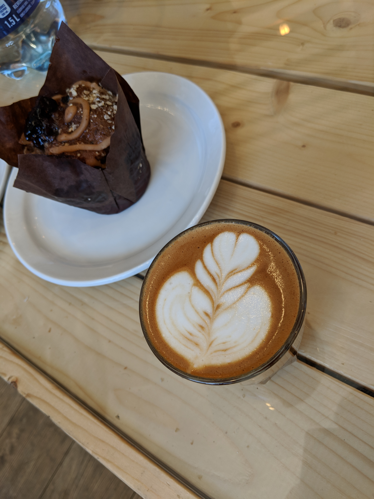
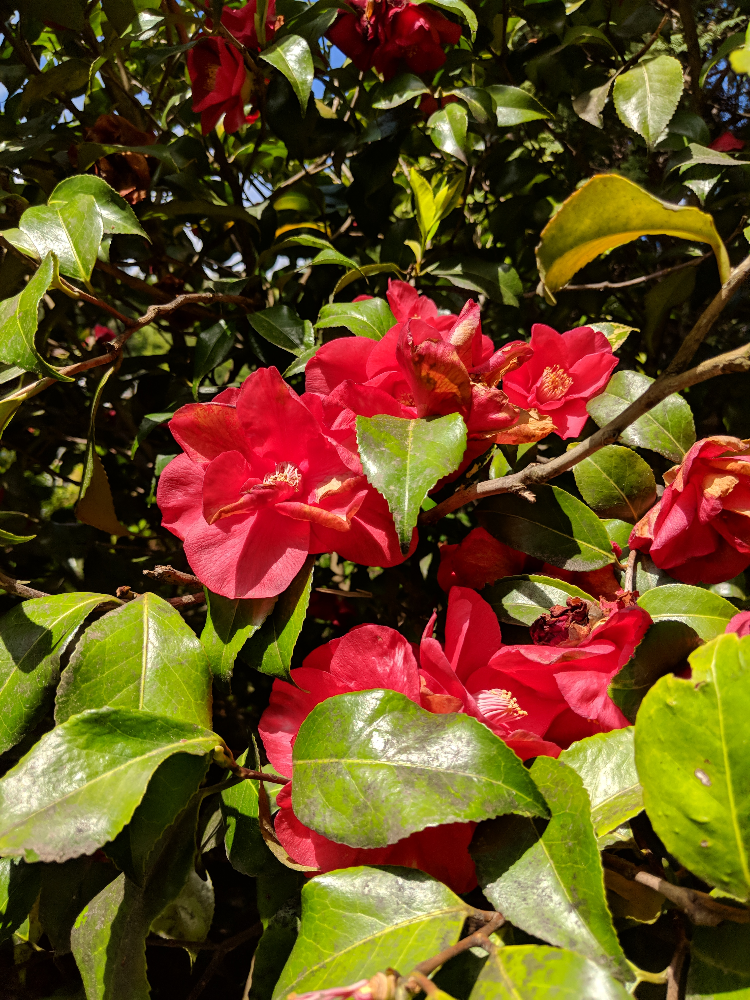
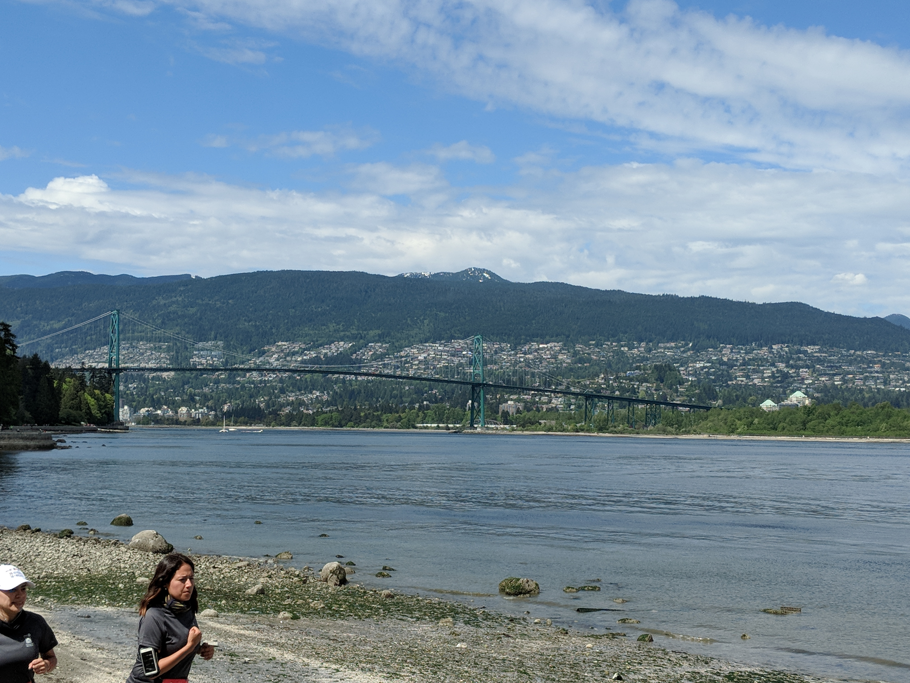
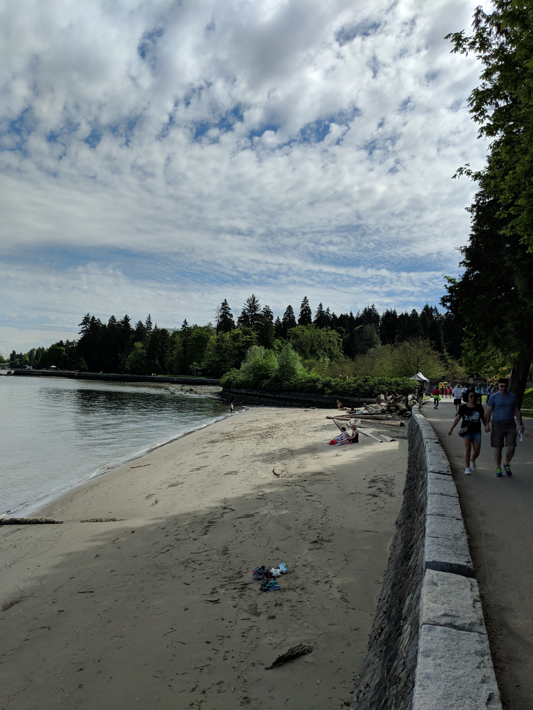
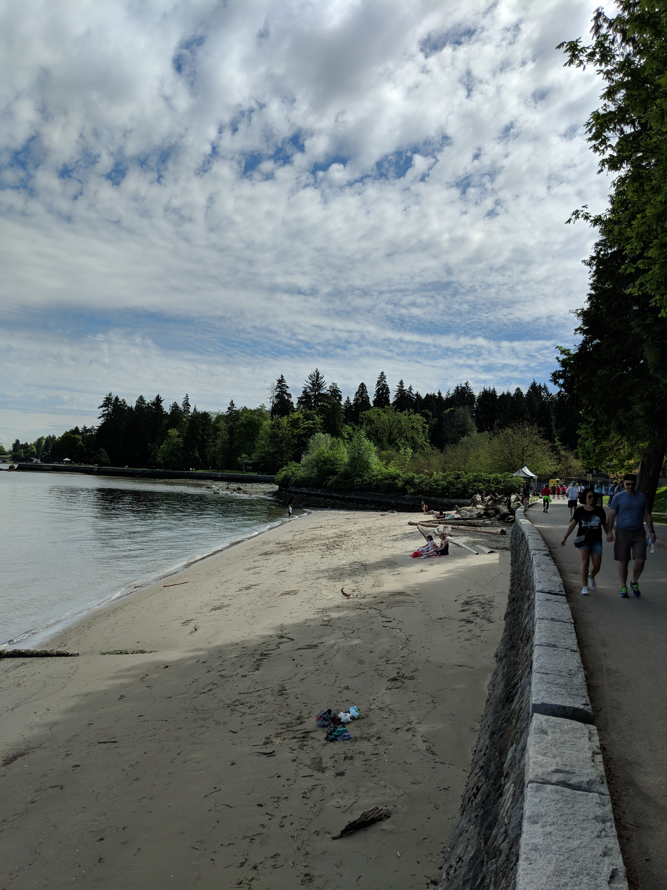
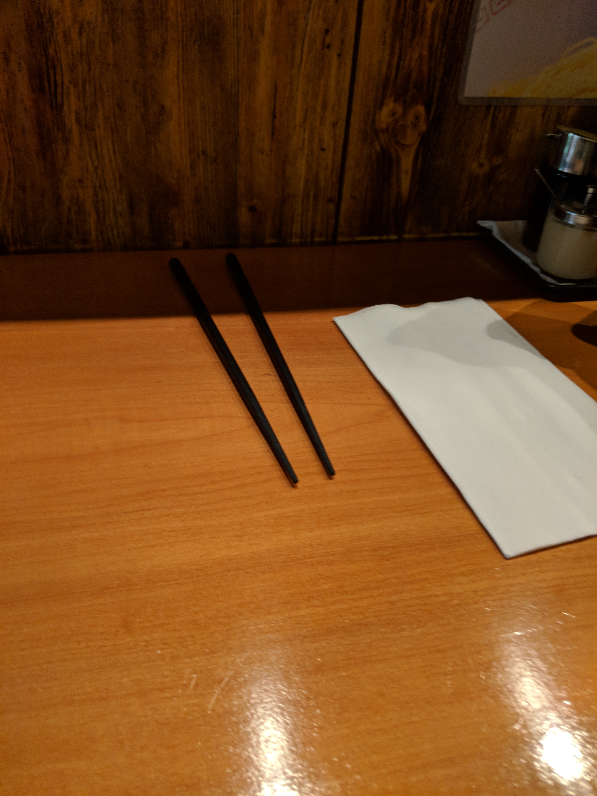
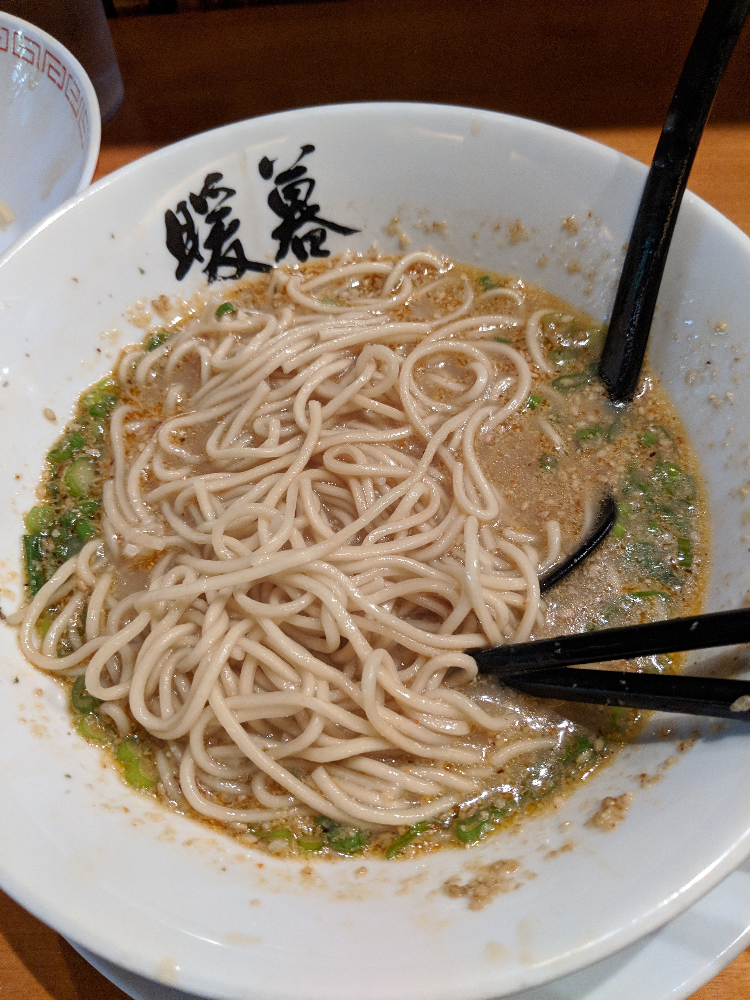
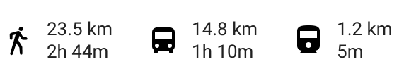

Vancouver, British Columbia: Day 2
 
Quote ☕ Unquote
This day started and ended with coffee. I began my morning at Pallet with my usual cortado + muffin breakfast, and ended it with some work hours at a lovely place called “Bean around the world.” A sort of symmetry (fueled by my crippling caffeine addiction) that I found oddly comforting. Once I finished my breakfast I got on a bus to Stanley Park. Brace yourself for these photos…


The Salmon Egg Farm
Supposedly this cement structure used to be a salmon egg farm? I’m not really sure how that works. Regardless, it looked awfully nifty.
 



Today was also apparently the 2018 Vancouver marathon! 



Beaver Lake
This lake was incredibly tranquil. I couldn’t find any actual beavers, but that didn’t stop me from enjoying it for an hour or so. The lake is located in the center of Stanley Park and holds a lot of significance to Indigenous peoples. It was beautiful.

B.C. Beaches
Supposedly Vancouver is home to several beautiful beaches. While the beach in Stanley Park is small, it was certainly stunning.


A “Kae-dama” Kind Of Night
After a full day of exploration, I was extremely tired and hungry. Just outside of the park was a popular traditional ramen shop called “Ramen Danbo.” With plenty of vegan and gluten-free options, I managed to down three waves of noodles before heading to a cafe for a bit of work. Goodnight Vancouver!
 

My GPS got a little buggy in Stanley Park. I walked closer to 12 miles.